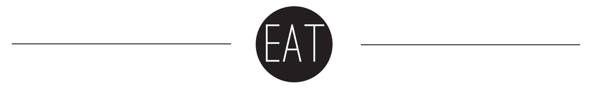
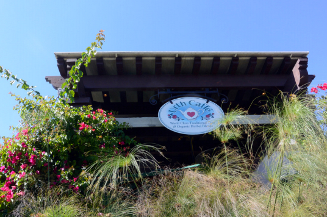

It's no secret that Santa Monica is a tourist haven.
Between Third Street Promenade, the pier and even the beach, the city is rife with overpriced, highly commercialized money traps.
But there's much more to Santa Monica than these tried-and-true tourist picks. In fact, the further south you go, the trendier and more eclectic Santa Monica becomes. Luckily for us, this famous town is practically in UCLA's backyard. The best street to get a feel of what Santa Monica is like for the locals is Main Street. This quirky district lies just south of Third Street Promenade but north of Venice. Here, you'll find a myriad of shops and eateries littering the twinkle light- covered neighborhood.


Urth Caffe
While there's plenty of high-end places to eat at in the area, you'll get quality food 's worth the few extra dollars here at Urth Caffe. Affectionately referred to as just "Urth" by locals in the know, this Santa Monica location is probably the most relaxed (and the least paparazzi friendly). Although it can be pricier than other stops, their lattes are to die for, especially if you add boba. (We highly recommend their iced "Organic Earl Grey Boba" or the "Honey Vanilla Latte"). Take a look at their pastries, salads and even pizzas for a meal you surely won't forget.